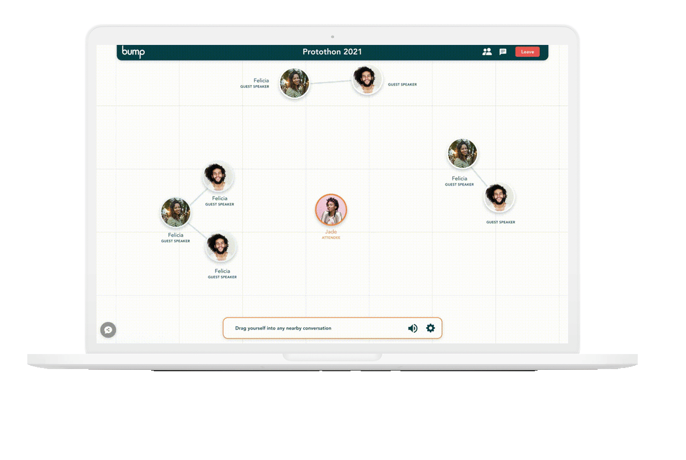
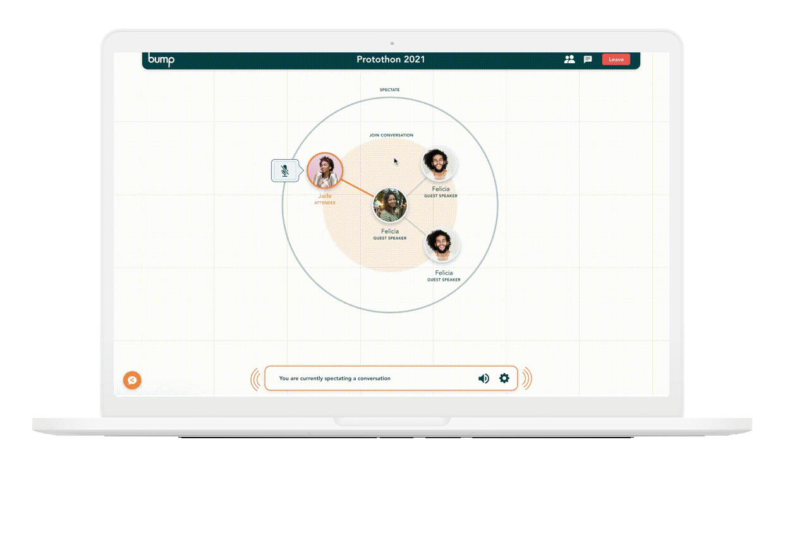
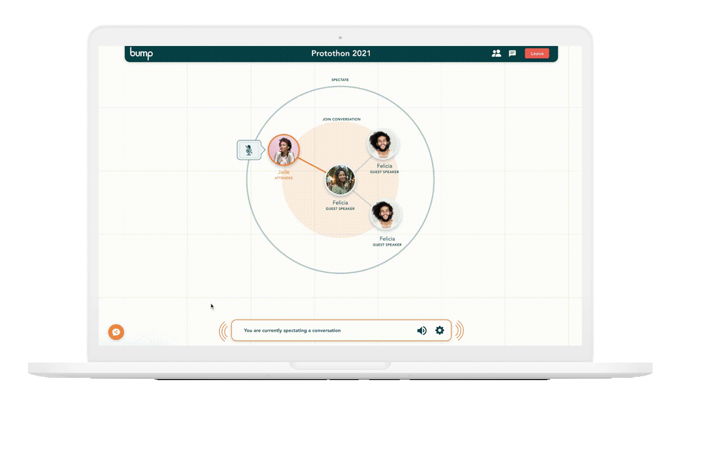
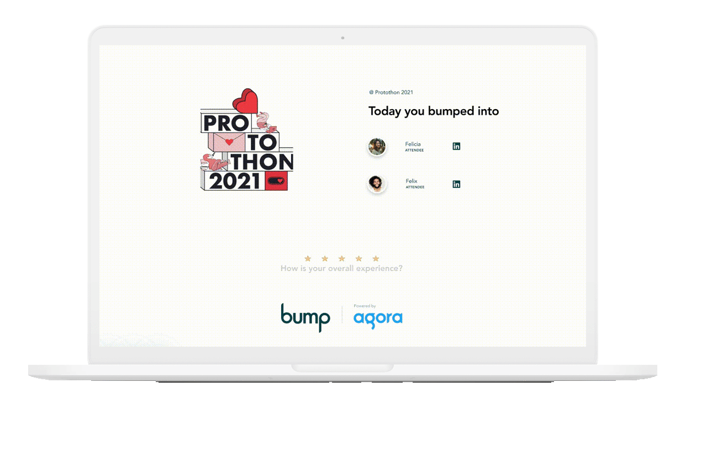

User Journey

Initial touchpoints
- Jade receives a bump notification through email
- Arrives at the landing page of the specific event
- Seamlessly connects with her Linkedln account

Entering the Event
Jade enters the event and can view the biography of attendees taken directly from the user's Linkedin profile.

Jade can move her avatar into the promixity of other conversations:
Floating, Speculator and Conversation
This enables the 3D Spatial audio* feature that provides Jade a simultaneous interation and real life environment
*3D Spatial Audio Prototype (drag neon circle in the corner)

Using data imported from Linkedln accounts, Bump can also provide Jade with personalized prompts to help guide her conversations.
This is driven by Natural Language Processing.

The Exit Experience
At the end of the event, Jade is given the names of attendees and speakers to ensure that she can reach out to anyone she missed.
She is also given a brief NPS survey on her experience with Bump.